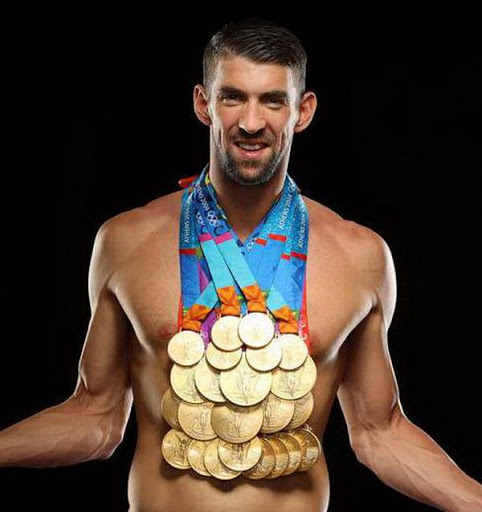
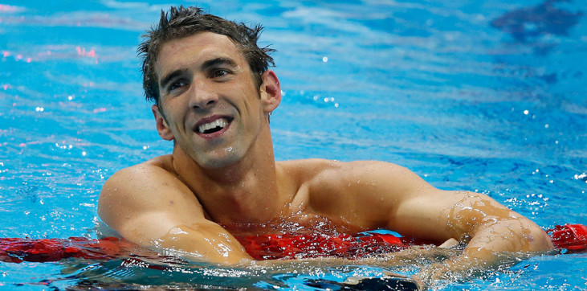

Майкл Фред Фелпс II (англ. Michael Fred Phelps II; род. 30 июня 1985 года, Балтимор) — американский пловец, 23-кратный олимпийский чемпион (13 раз — на индивидуальных дистанциях, 10 — в эстафетах), 26-кратный чемпион мира в 50-метровом бассейне, многократный рекордсмен мира. Абсолютный рекордсмен по количеству золотых наград (23) и наград в сумме (28) в истории Олимпийских игр, а также золотых наград (26) и наград в сумме (33) в истории чемпионатов мира по водным видам спорта. Спортивные прозвища — «Балтиморская пуля» (англ. The Baltimore Bullet) и «Летающая рыба» (англ. Flying Fish). Наиболее успешно выступал в плавании вольным стилем и баттерфляем, а также в комплексном плавании. Объявил о завершении карьеры в 2012 году в возрасте 27 лет после Олимпийских игр в Лондоне, но вновь начал участвовать в международных состязаниях с 2014 года, отобравшись на Олимпийские игры в Рио, где выиграл пять золотых и одну серебряную медаль.
Фелпс родился и вырос в районе Тоусон, расположенном к северу от Балтимора. Майкл является младшим из трёх детей. Его мать, Дебора Сью «Дебби» (урождённая Дэвиссон), является директором средней школы. Его отец, Майкл Фред Фелпс, играл в американский футбол в средней школе. Родители Фелпса развелись в 1994 году, и его отец вступил в повторный брак в 2000 году. Фелпс окончил среднюю школу Тоусона в 2003 году. Фелпс начал заниматься плаванием в возрасте семи лет, отчасти под влиянием своей сестры. Когда Фелпс был в шестом классе, ему был поставлен диагноз дефицита внимания и гиперактивности. В возрасте 10 лет, будучи обладателем национального рекорда для своей возрастной группы, Фелпс стал тренироваться под руководством тренера Боба Боумана. Успехов в своей возрастной группе у Фелпса было всё больше, и в возрасте 15 лет он принял участие в Олимпийских играх 2000 года. 30 марта 2001 года на чемпионате мира по водным видам спорта Фелпс побил мировой рекорд на дистанции 200 метров стилем баттерфляй. Таким образом, Майкл в возрасте 15 лет и 9 месяцев стал самым молодым человеком, когда-либо устанавливавшим мировой рекорд по плаванию.
In dictum ex orci, vitae ultricies ipsum sagittis et. Nam in risus non mauris dictum consequat ac vitae nisl. Vestibulum sed mauris gravida, rhoncus augue eget, finibus libero. Vivamus vel quam congue, vehicula elit eu, congue nulla. Cras at dui sit amet nibh pharetra aliquam. Morbi rhoncus metus metus, eget tincidunt libero mollis at. Donec ut sodales diam, quis finibus libero. Vivamus posuere pharetra nibh, nec tempor nulla. Integer vel mauris rhoncus, iaculis augue quis, scelerisque tellus.
„Рекорды существуют для того, чтобы их бить.“ Майкл Фелпс
На Олимпиаде в Сиднее в 2000 году 15-летний Фелпс стал самым молодым олимпийским пловцом из США за последние 68 лет. Он выступил только на дистанции 200 метров баттерфляем и занял пятое место в финале (от бронзы Майкла отделили 0,33 сек). На Олимпиаде в Афинах в 2004 году 19-летний Фелпс выиграл восемь медалей, из которых шесть были золотыми и две бронзовыми, установив при этом три олимпийских и один мировой рекорд. Кроме того, восемь медалей на одной Олимпиаде — повторение рекорда знаменитого советского гимнаста Александра Дитятина, который установил своё достижение на Олимпиаде 1980 года в Москве. На Олимпиаде в Пекине в 2008 году Фелпс выиграл все дистанции, на которых стартовал, и завоевал восемь золотых наград, побив рекорд Марка Спитца (семь золотых медалей на Олимпиаде 1972 года в Мюнхене), что также сделало его 14-кратным олимпийским чемпионом. Таким образом, обойдя финского легкоатлета Пааво Нурми, американского легкоатлета Карла Льюиса и своего коллегу по амплуа американца Марка Спитца, он стал самым титулованным спортсменом в истории современных Олимпийских игр. На Олимпийских играх в Лондоне в 2012 году по общему числу олимпийских наград Майкл превзошёл всех атлетов во всех видах спорта — 22 медали, побив рекорд советской гимнастки Ларисы Латыниной (18), державшийся 48 лет. На Олимпийских играх в Рио-де-Жанейро в 2016 году Фелпс выиграл пять золотых медалей — в эстафетах 4×100 м и 4×200 м вольным стилем, 4×100 м в комбинированной эстафете, а также на дистанциях 200 м стилем баттерфляй и 200 м комплексным плаванием. Победив в комплексном плавании на дистанции 200 м, он стал первым пловцом, выигравшим золотую медаль на одной и той же дистанции на четырёх олимпиадах (и одним из четырёх спортсменов — наряду с легкоатлетами Карлом Льюисом и Элом Ортером, выигравших в одной и той же дисциплине на четырёх олимпиадах). Победив 13 раз на индивидуальных дистанциях, он побил рекорд древнегреческого легкоатлета Леонида Родосского, который выиграл свои последние 3 золотые медали из 12 за 2168 лет до этого в 152 году до нашей эры.